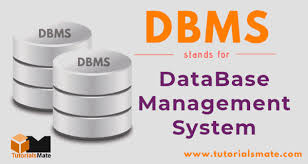
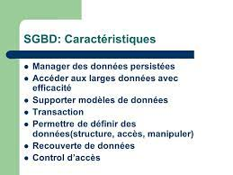

QU'EST CE QUE LA BASE DE DONNEES ?
Les base de données est un ensemble structuré de données apparentées qui modélisent un univers réel Une BD est faite pour enregistrer des faits, des opérations au sein d'un organisme (administration, banque, université, hôpital, ...). Les Base de données ont une place essentielle dans l'informatique La base de données est une collection de données interdépendantes qui sont utilisées pour récupérer, insérer et supprimer efficacement les données. Il est également utilisé pour organiser les données sous forme de tableau, de schéma, de vues et de rapports, etc. Par exemple: la base de données des universités organise les données sur l'administrateur, le personnel, les étudiants et les professeurs, etc. En utilisant la base de données, vous pouvez facilement récupérer, insérer et supprimer les informations. EN SAVOIR PLUS
SYSTEME DE GESTION DE BASE DE DONNEESS
Il s’agit d’un logiciel permettant de stocker et de récupérer les données des utilisateurs tout en tenant compte des mesures de sécurité appropriées. Il se compose d'un groupe de programmes qui manipulent la base de données. Le SGBD accepte la demande de données d'une application et demande au système d'exploitation de fournir les données spécifiques. Dans les grands systèmes, un SGBD aide les utilisateurs et d'autres logiciels tiers à stocker et à récupérer des données. Le SGBD permet aux utilisateurs de créer leurs propres bases de données selon leurs besoins. Le terme «SGBD» comprend l'utilisateur de la base de données et d'autres programmes d'application. Il fournit une interface entre les données et l'application logicielle. EN SAVOIR PLUS


Caractéristiques du SGBD
Il utilise un référentiel numérique établi sur un serveur pour stocker et gérer les informations. Il peut fournir une vue claire et logique du processus qui manipule les données. Le SGBD contient des procédures de sauvegarde et de restauration automatiques. Il est utilisé pour soutenir la manipulation et le traitement des données. Il est utilisé pour assurer la sécurité des données. Il peut visualiser la base de données à partir de différents points de vue en fonction des besoins de l'utilisateur. EN SAVOIR PLUS
AVANTAGES DU SGDB
Contrôle la redondance de la base de données: il peut contrôler la redondance des données car il stocke toutes les données dans un seul fichier de base de données et que les données enregistrées sont placées dans la base de données.
- de données: dans le SGBD, les utilisateurs autorisés d'une organisation peuvent partager les données entre plusieurs utilisateurs.
- Maintenance aisée : il peut être facilement maintenable en raison de la nature centralisée du système de base de données.
- Réduisez le temps: cela réduit le temps de développement et les besoins de maintenance.
- Sauvegarde: il fournit des sous-systèmes de sauvegarde et de récupération qui créent une sauvegarde automatique des données des pannes matérielles et logicielles et restaure les données si nécessaire.
- interface utilisateur multiple: il fournit différents types d'interfaces utilisateur telles que des interfaces utilisateur graphiques, des interfaces de programme d'application EN SAVOIR PLUS
POURQUOI APPRENDRE LE SGBD
Traditionnellement, les données étaient organisées dans des formats de fichiers. Le SGBD était alors un nouveau concept, et toutes les recherches ont été faites pour lui permettre de surmonter les lacunes du style traditionnel de gestion des données. Un SGBD moderne présente les caractéristiques suivantes
- Entité du monde réel Un SGBD moderne est plus réaliste et utilise des entités du monde réel pour concevoir son architecture. Il utilise également le comportement et les attributs. Par exemple, une base de données scolaire peut utiliser les élèves comme une entité et leur âge comme un attribut.
- basées sur les relations Le SGBD permet aux entités et aux relations entre elles de former des tables. Un utilisateur peut comprendre l'architecture d'une base de données simplement en regardant les noms de table.
- des données et de l'application Un système de base de données est entièrement différent de ses données. Une base de données est une entité active, alors que les données sont dites passives, sur lesquelles la base de données fonctionne et s'organise. Le SGBD stocke également des métadonnées, qui sont des données sur les données, pour faciliter son propre processus.
- Moins de redondance Le SGBD suit les règles de normalisation, qui divise une relation lorsque l'un de ses attributs présente une redondance de valeurs. La normalisation est un processus mathématiquement riche et scientifique qui réduit la redondance des données.
- Cohérence La cohérence est un état dans lequel chaque relation dans une base de données reste cohérente. Il existe des méthodes et des techniques permettant de détecter une tentative de laisser la base de données dans un état incohérent. Un SGBD peut offrir une plus grande cohérence par rapport aux formes antérieures d'applications de stockage de données telles que les systèmes de traitement de fichiers.
- Langage de requête Le SGBD est équipé d'un langage de requête, ce qui le rend plus efficace pour récupérer et manipuler les données. Un utilisateur peut appliquer autant et autant d'options de filtrage différentes que nécessaire pour récupérer un ensemble de données. Traditionnellement, ce n'était pas possible lorsque le système de traitement de fichiers était utilisé.